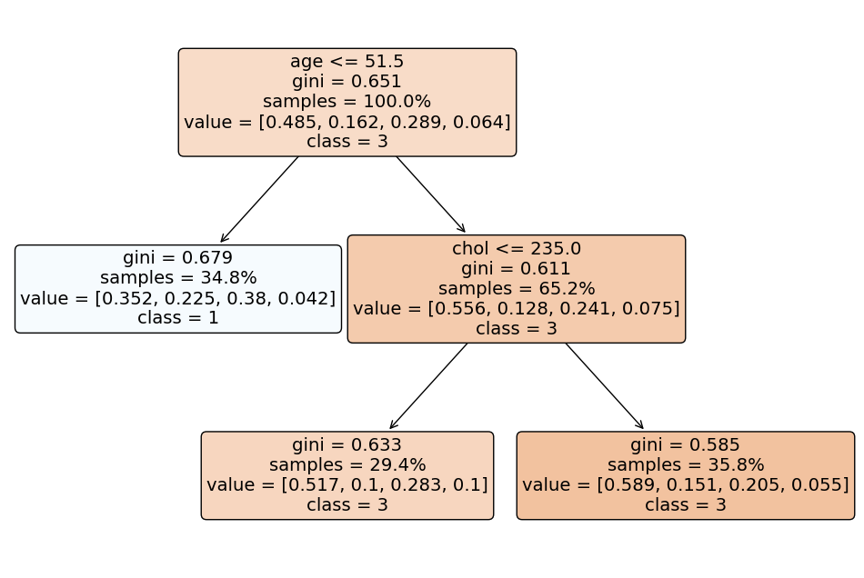

## library imports here
import pandas as pd
import numpy as np
from plotnine import *
from sklearn.pipeline import Pipeline
from sklearn.neighbors import KNeighborsClassifier
from sklearn.tree import DecisionTreeClassifier
from sklearn.linear_model import LogisticRegression
from sklearn.compose import ColumnTransformer
from sklearn.model_selection import train_test_split
from sklearn.metrics import accuracy_score, confusion_matrix, get_scorer_names, f1_score, roc_auc_score
from sklearn.discriminant_analysis import LinearDiscriminantAnalysis
import matplotlib.pyplot as plt
from sklearn.svm import SVC
from sklearn.model_selection import GridSearchCVQ1: Natural Multiclass Models
Our dataset consists of clinical data from patients who entered the hospital complaining of chest pain (“angina”) during exercise. The information collected includes:
age: Age of the patientsex: Sex of the patientcp: Chest Pain type- Value 0: asymptomatic
- Value 1: typical angina
- Value 2: atypical angina
- Value 3: non-anginal pain
trtbps: resting blood pressure (in mm Hg)chol: cholesterol in mg/dl fetched via BMI sensorrestecg: resting electrocardiographic results- Value 0: normal
- Value 1: having ST-T wave abnormality (T wave inversions and/or ST elevation or depression of > 0.05 mV)
- Value 2: showing probable or definite left ventricular hypertrophy by Estes’ criteria
thalach: maximum heart rate achieved during exerciseoutput: the doctor’s diagnosis of whether the patient is at risk for a heart attack- 0 = not at risk of heart attack
- 1 = at risk of heart attack
ha = pd.read_csv("https://www.dropbox.com/s/aohbr6yb9ifmc8w/heart_attack.csv?dl=1")
ha.head()| age | sex | cp | trtbps | chol | restecg | thalach | output | |
|---|---|---|---|---|---|---|---|---|
| 0 | 63 | 1 | 3 | 145 | 233 | 0 | 150 | 1 |
| 1 | 37 | 1 | 2 | 130 | 250 | 1 | 187 | 1 |
| 2 | 56 | 1 | 1 | 120 | 236 | 1 | 178 | 1 |
| 3 | 57 | 0 | 0 | 120 | 354 | 1 | 163 | 1 |
| 4 | 57 | 1 | 0 | 140 | 192 | 1 | 148 | 1 |
Fit a multiclass KNN, Decision Tree, and LDA for the heart disease data; this time predicting the type of chest pain (categories 0 - 3) that a patient experiences. For the decision tree, plot the fitted tree, and interpret the first couple splits.
X = ha[['age', 'chol']]
y = ha['cp']
k_pipeline = Pipeline([
("k_classifier", KNeighborsClassifier())
])
n_neighbors = {'k_classifier__n_neighbors': [1, 5, 10, 15, 20, 25, 30, 40, 50, 60, 70, 80]}
gscv = GridSearchCV(k_pipeline, n_neighbors, cv = 5, scoring='accuracy')
gscv_fitted = gscv.fit(X, y)
pd.DataFrame(data = {"n": [1, 5, 10, 15, 20, 25, 30, 40, 50, 60, 70, 80], "scores": gscv_fitted.cv_results_['mean_test_score']})| n | scores | |
|---|---|---|
| 0 | 1 | 0.376835 |
| 1 | 5 | 0.391919 |
| 2 | 10 | 0.414007 |
| 3 | 15 | 0.436027 |
| 4 | 20 | 0.469158 |
| 5 | 25 | 0.454276 |
| 6 | 30 | 0.446936 |
| 7 | 40 | 0.479933 |
| 8 | 50 | 0.472458 |
| 9 | 60 | 0.457778 |
| 10 | 70 | 0.457778 |
| 11 | 80 | 0.476162 |
X = ha[['age', 'chol']]
y = ha['output']
X_train, X_test, y_train, y_test = train_test_split(X, y, test_size=0.25, random_state=1)
k_pipeline = Pipeline([
("k_classifier", KNeighborsClassifier(n_neighbors=40))
])
k_fit = k_pipeline.fit(X_train, y_train)
k_pred = k_fit.predict(X_test)
lda = LinearDiscriminantAnalysis()
X = ha[['age', 'chol']]
y = ha['cp']
X_train, X_test, y_train, y_test = train_test_split(X, y, test_size=0.25)
lda_fit = lda.fit(X_train,y_train)
lda_pred = lda_fit.predict(X_test)X = ha[['age', 'chol']]
y = ha['cp']
tree_pipeline = Pipeline([
("tree_classifier", DecisionTreeClassifier())
])
min_samples_leaf = {'tree_classifier__min_samples_leaf': [1, 5, 10, 15, 20, 25, 30, 40, 50, 60, 70, 80]}
gscv = GridSearchCV(tree_pipeline, min_samples_leaf, cv = 5, scoring='accuracy')
gscv_fitted = gscv.fit(X, y)
pd.DataFrame(data = {"n": [1, 5, 10, 15, 20, 25, 30, 40, 50, 60, 70, 80], "scores": gscv_fitted.cv_results_['mean_test_score']})| n | scores | |
|---|---|---|
| 0 | 1 | 0.362155 |
| 1 | 5 | 0.362761 |
| 2 | 10 | 0.366195 |
| 3 | 15 | 0.432256 |
| 4 | 20 | 0.476296 |
| 5 | 25 | 0.465185 |
| 6 | 30 | 0.457778 |
| 7 | 40 | 0.450438 |
| 8 | 50 | 0.450438 |
| 9 | 60 | 0.457845 |
| 10 | 70 | 0.465185 |
| 11 | 80 | 0.461549 |
from sklearn.tree import DecisionTreeClassifier, plot_tree
from sklearn.model_selection import train_test_split
from sklearn.metrics import accuracy_score, confusion_matrix
import matplotlib.pyplot as plt
import pandas as pd
X = ha[['age', 'chol']]
y = ha['cp']
X_train, X_test, y_train, y_test = train_test_split(X, y, test_size=0.25, random_state=1)
tree_classifier = DecisionTreeClassifier(min_samples_leaf=60)
tree_fit = tree_classifier.fit(X_train, y_train)
tree_pred = tree_fit.predict(X_test)
class_names = list(map(str, y.unique()))
# Visualizing the decision tree
plt.figure(figsize=(12, 8))
plot_tree(tree_fit, feature_names=list(X.columns), class_names=class_names, filled=True, rounded=True, proportion=True)
plt.show()
Q2: OvR
Create a new column in the ha dataset called cp_is_3, which is equal to 1 if the cp variable is equal to 3 and 0 otherwise.
Then, fit a Logistic Regression to predict this new target, and report the F1 Score.
Repeat for the other three cp categories. Which category was the OvR approach best at distinguishing?
ha['cp_is_3'] = np.where(ha['cp'] == 3, 1, 0)
ha['cp_is_2'] = np.where(ha['cp'] == 2, 1, 0)
ha['cp_is_1'] = np.where(ha['cp'] == 1, 1, 0)
ha['cp_is_0'] = np.where(ha['cp'] == 0, 1, 0)
ha.head()| age | sex | cp | trtbps | chol | restecg | thalach | output | cp_is_3 | cp_is_2 | cp_is_1 | cp_is_0 | |
|---|---|---|---|---|---|---|---|---|---|---|---|---|
| 0 | 63 | 1 | 3 | 145 | 233 | 0 | 150 | 1 | 1 | 0 | 0 | 0 |
| 1 | 37 | 1 | 2 | 130 | 250 | 1 | 187 | 1 | 0 | 1 | 0 | 0 |
| 2 | 56 | 1 | 1 | 120 | 236 | 1 | 178 | 1 | 0 | 0 | 1 | 0 |
| 3 | 57 | 0 | 0 | 120 | 354 | 1 | 163 | 1 | 0 | 0 | 0 | 1 |
| 4 | 57 | 1 | 0 | 140 | 192 | 1 | 148 | 1 | 0 | 0 | 0 | 1 |
X = ha[['age', 'chol', 'trtbps', 'restecg', 'thalach', 'sex']]
y = ha['cp_is_3']
X_train, X_test, y_train, y_test = train_test_split(X, y, test_size=0.25, stratify= y)
logr = LogisticRegression()
logr_fit = logr.fit(X_train, y_train)
logr_pred = logr.predict(X_test)
print("F1 Score:", f1_score(y_test, logr_pred, average='macro'))F1 Score: 0.48120300751879697C:\Users\Tyler Clyde\AppData\Roaming\Python\Python311\site-packages\sklearn\linear_model\_logistic.py:458: ConvergenceWarning: lbfgs failed to converge (status=1):
STOP: TOTAL NO. of ITERATIONS REACHED LIMIT.
Increase the number of iterations (max_iter) or scale the data as shown in:
https://scikit-learn.org/stable/modules/preprocessing.html
Please also refer to the documentation for alternative solver options:
https://scikit-learn.org/stable/modules/linear_model.html#logistic-regressionX = ha[['age', 'chol']]
y = ha['cp_is_2']
X_train, X_test, y_train, y_test = train_test_split(X, y, test_size=0.25, random_state=1)
logr = LogisticRegression()
logr_fit = logr.fit(X_train, y_train)
logr_pred = logr.predict(X_test)
print("F1 Score:", f1_score(y_test, logr_pred, average='macro'))F1 Score: 0.4051724137931035X = ha[['age', 'chol']]
y = ha['cp_is_1']
X_train, X_test, y_train, y_test = train_test_split(X, y, test_size=0.25, random_state=1)
logr = LogisticRegression()
logr_fit = logr.fit(X_train, y_train)
logr_pred = logr.predict(X_test)
print("F1 Score:", f1_score(y_test, logr_pred, average= 'macro'))F1 Score: 0.45669291338582674X = ha[['age', 'chol']]
y = ha['cp_is_0']
X_train, X_test, y_train, y_test = train_test_split(X, y, test_size=0.25, random_state=1)
logr = LogisticRegression()
logr_fit = logr.fit(X_train, y_train)
logr_pred = logr.predict(X_test)
print("F1 Score:", f1_score(y_test, logr_pred))F1 Score: 0.5172413793103449Q3: OvO
Reduce your dataset to only the 0 and 1 types of chest pain.
Then, fit a Logistic Regression to predict between the two groups, and report the ROC-AUC.
Repeat comparing category 0 to 2 and 3. Which pair was the OvO approach best at distinguishing?
ha_0_1 = ha[~((ha['cp'] == 2) | (ha['cp'] == 3))]
ha_0_2 = ha[~((ha['cp'] == 1) | (ha['cp'] == 3))]
ha_0_3 = ha[~((ha['cp'] == 1) | (ha['cp'] == 2))]X = ha_0_1[['age', 'chol']]
y = ha_0_1['cp']
X_train, X_test, y_train, y_test = train_test_split(X, y, test_size=0.25, random_state=1)
logr = LogisticRegression()
logr_fit = logr.fit(X_train, y_train)
logr_pred = logr.predict(X_test)
y_probs = logr_fit.predict_proba(X_test)[:, 1]
roc_auc_scores = roc_auc_score(y_test, y_probs)
print("auc Score:", roc_auc_scores)auc Score: 0.7553763440860215X = ha_0_2[['age', 'chol']]
y = ha_0_2['cp']
X_train, X_test, y_train, y_test = train_test_split(X, y, test_size=0.25, random_state=1)
logr = LogisticRegression()
logr_fit = logr.fit(X_train, y_train)
logr_pred = logr.predict(X_test)
y_probs = logr_fit.predict_proba(X_test)[:, 1]
roc_auc_scores = roc_auc_score(y_test, y_probs)
print("auc Score:", roc_auc_scores)auc Score: 0.6636904761904762X = ha_0_3[['age', 'chol']]
y = ha_0_3['cp']
X_train, X_test, y_train, y_test = train_test_split(X, y, test_size=0.25, random_state=1)
logr = LogisticRegression()
logr_fit = logr.fit(X_train, y_train)
logr_pred = logr.predict(X_test)
y_probs = logr_fit.predict_proba(X_test)[:, 1]
roc_auc_scores = roc_auc_score(y_test, y_probs)
print("auc Score:", roc_auc_scores)auc Score: 0.5687500000000001